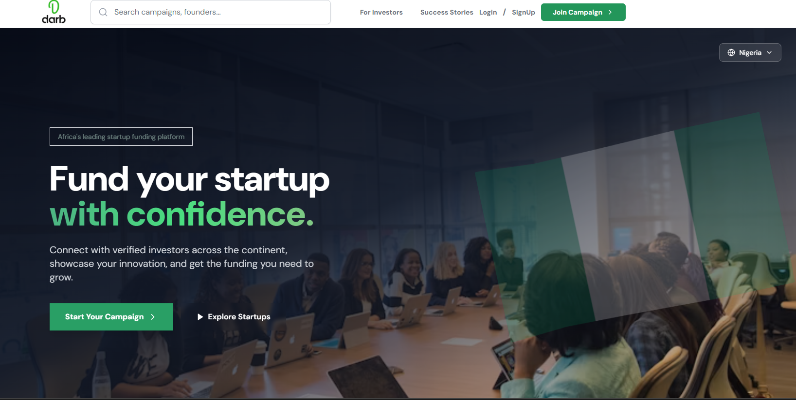
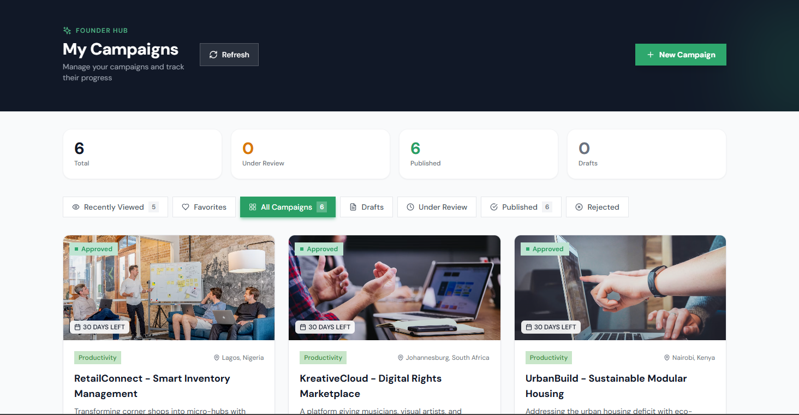
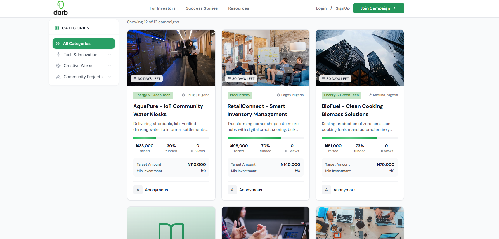
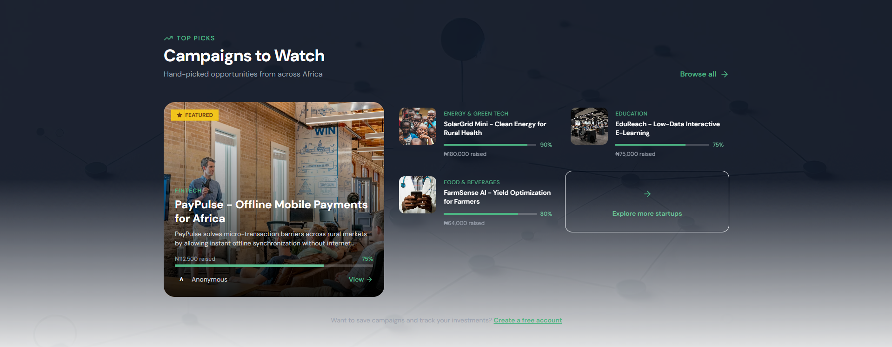
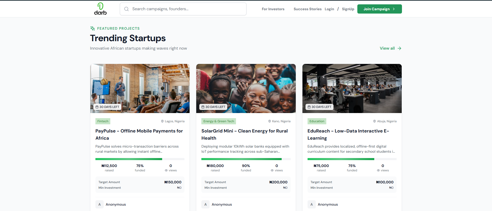
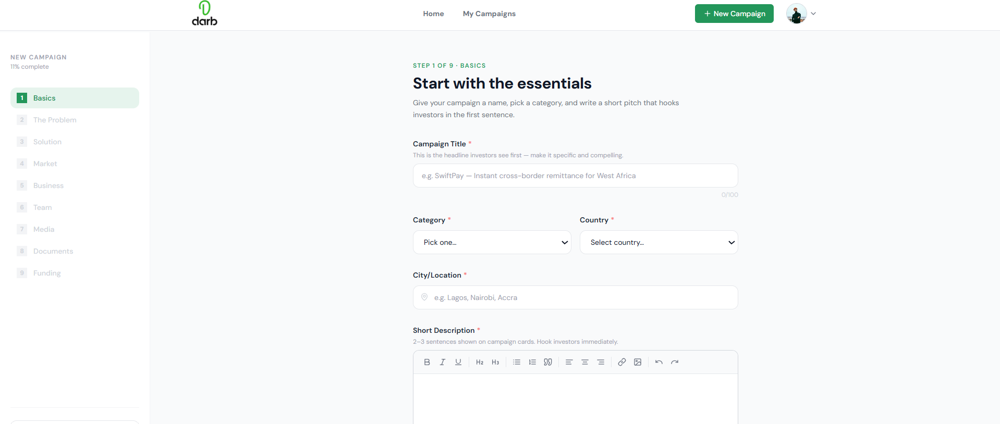

A transparent crowdfunding ecosystem where creators connect with supporters, ideas get funded without barriers, and every contribution is tracked from pledge to impact—built on trust, powered by technology.
Traditional crowdfunding platforms create more barriers than they remove. High fees eat into already-tight budgets. Opaque payment processing leaves supporters wondering where their money actually went. Campaign creation workflows are intimidating, burying simple ideas under unnecessary complexity.
Creators abandon campaigns before launch because the setup process feels like a project in itself. Supporters hesitate to contribute because they can't see how funds are used. Both sides lose trust in a system that should be connecting them.
The platform shouldn't be the obstacle. When the technology gets in the way of human connection, good ideas die waiting for funding that never comes.
From first landing to successful campaign launch—see how DARB simplifies crowdfunding with intuitive navigation, transparent tracking, and seamless interactions.
Browse campaigns, explore project details, and see real-time funding progress across the entire platform
The discovery experience prioritizes clarity. Browse featured campaigns, filter by category, search by keyword, and sort by funding status. Each campaign card shows essential information at a glance—funding progress, time remaining, and backer count.

Homepage featuring active campaigns with smart filtering and category-based navigation
Campaign pages show everything supporters need to make informed decisions. Rich project descriptions, funding goals and timelines, creator profiles, backer lists, and contribution history—all visible, all verifiable.

Detailed campaign view with comprehensive project information and real-time funding metrics
Creating a campaign shouldn't require a tutorial. DARB's campaign builder uses progressive disclosure—show what's necessary, hide what's not. Rich text editing, image uploads, goal setting, and timeline configuration—all in one streamlined workflow.
Watch the complete campaign creation flow from initial setup to live publication

Intuitive form builder with real-time validation and preview
Once campaigns go live, creators need data—not just numbers, but insights. The dashboard tracks funding velocity, shows peak contribution times, identifies top backers, and forecasts goal completion. All updated in real-time, no refresh needed.

Analytics dashboard with funding trends, backer demographics, and milestone tracking
The contribution process removes friction without sacrificing security. Choose amount, enter payment details, confirm. Behind the scenes: encryption, fraud detection, transaction logging, receipt generation—all automated, all transparent.

Streamlined checkout with secure payment processing and instant confirmation
Supporters see every campaign they've backed, track contribution history, manage notification preferences, and receive updates from creators. One dashboard for all crowdfunding activity.

User profile showing backed campaigns, contribution history, and communication preferences
DARB Networks runs on a modern tech stack prioritizing performance and security. React.js with Vite for instant page loads, Tailwind CSS for responsive design, Node.js for robust backend operations, and WebSocket connections for real-time updates.
Every transaction is encrypted, every database operation is transactional, and every critical workflow is tested. The platform handles payment processing, fund management, user authentication, and campaign analytics—all while maintaining sub-second response times.
Create campaigns in minutes with rich text editors, image uploads, and flexible funding goals—no approval delays.
Live funding dashboards with visual progress bars, milestone indicators, and time-remaining countdowns that update instantly.
Integrated payment gateway with encryption, fraud detection, automatic receipts, and instant transaction confirmation.
Direct messaging, mass update broadcasts, comment threads, and notification systems keeping supporters engaged throughout the campaign.
Public ledgers showing every contribution amount, timestamp, and allocation—no hidden fees, no unclear fund usage.
Interactive charts tracking funding trends, peak contribution times, supporter geography, and conversion metrics for data-driven decisions.
Search, filter, and browse campaigns by category, funding status, launch date, or popularity with intelligent sorting algorithms.
Fully optimized for desktop, tablet, and mobile—create campaigns, manage backers, and process contributions from any device.
DARB operates as a two-sided marketplace with complete transparency at every step. Here's the complete funding lifecycle from campaign creation to project completion.
Creators fill out project details, upload visuals, set funding targets and deadlines, then publish. The platform validates inputs and generates a public campaign page instantly.
Campaigns appear in browse feeds, search results, and category pages. Supporters read project descriptions, view funding progress, and assess campaign credibility.
Supporters choose contribution amounts, process payments through secure gateways, receive instant confirmation, and are added to the backer list with notification preferences.
Creators post milestones, share development updates, and communicate directly with backers. The platform sends automated notifications when funding thresholds are reached.
When campaigns reach their goals, funds are released to creators. The platform tracks disbursements, generates tax documentation, and maintains public transaction records.
Completed campaigns remain visible with final funding totals, backer counts, and project outcomes—building creator credibility for future campaigns.
The entire system runs on a REST API architecture with real-time WebSocket connections for live updates. Database transactions ensure payment integrity, role-based access control protects sensitive operations, and automated testing validates critical funding workflows before deployment.
Crowdfunding should amplify good ideas, not gatekeep them. When platforms prioritize transparency over profit margins, creators and supporters both win—and meaningful projects get the funding they deserve.
DARB Networks is live, deployed, and functional—a working proof that crowdfunding platforms can operate with full transparency, minimal friction, and user-first design. No gatekeeping. No predatory fees. Just technology connecting people who want to build with people who want to support.
The platform demonstrates that modern web technologies—when applied thoughtfully—can rebuild broken systems into something better. Fast load times, real-time updates, and responsive interfaces aren't luxuries. They're requirements for platforms that respect users' time and trust.